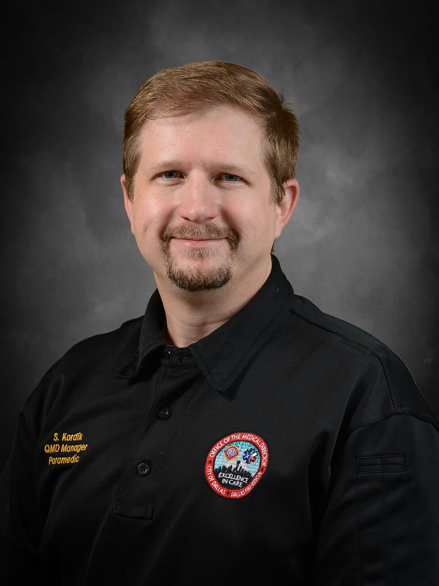
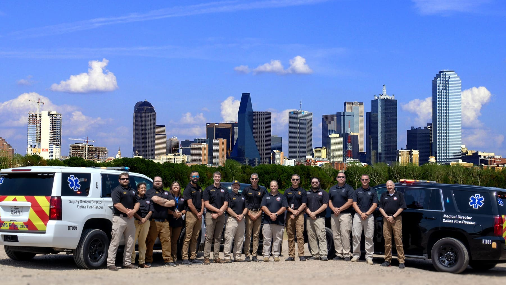
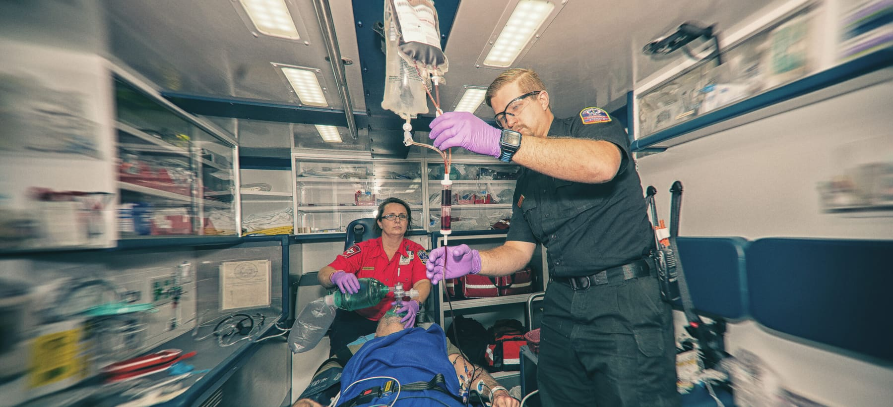
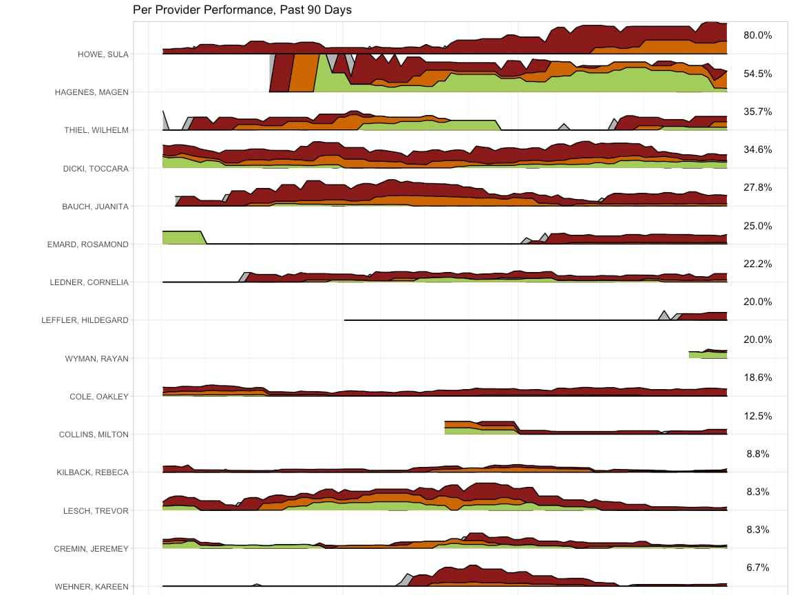

A year of a 911 EMS system told in photographs, numbers and plain language. I led it, shot much of it, and designed it.



Rolling 30-day windows for charts open past 24 hours, 4 days and 8 days, matched to one 4-day rotation.
Using historic payroll to set fair extra-duty teaching rates under blended-overtime rules.
First-author study, 3,020 patients, Prehospital Care Research Forum.
Course video, recruitment pieces, and an EMS education podcast, shot and mixed in-house.
In 2005 I spent two weeks volunteering with EMS crews at the Hurricane Katrina evacuee shelter in Houston, then signed up for an EMT class. Twenty-one years later I still think it’s the best profession there is.
Along the way I taught paramedics, ran accredited education programs, learned statistics, and picked up a camera. These days I lead a quality management division. Off shift I backpack, cook, build things, and read too many books at once.